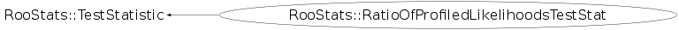

class RooStats::RatioOfProfiledLikelihoodsTestStat: public RooStats::TestStatistic
TestStatistic that returns the ratio of profiled likelihoods.
Function Members (Methods)
public:
Data Members
private:
| RooArgSet* | fAltPOI | |
| RooStats::ProfileLikelihoodTestStat | fAltProfile | |
| RooStats::ProfileLikelihoodTestStat | fNullProfile | |
| Bool_t | fSubtractMLE | |
| static Bool_t | fgAlwaysReuseNll |
Class Charts
{kind=link}
{kind=link}
{kind=link}
{kind=link}

Function documentation
RatioOfProfiledLikelihoodsTestStat(RooAbsPdf& nullPdf, RooAbsPdf& altPdf, const RooArgSet* altPOI = 0)
Calculates the ratio of profiled likelihoods.
By default the calculation is:
Lambda(mu_alt , conditional MLE for alt nuisance)
log --------------------------------------------
Lambda(mu_null , conditional MLE for null nuisance)
where Lambda is the profile likeihood ratio, so the
MLE for the null and alternate are subtracted off.
If SetSubtractMLE(false) then it calculates:
L(mu_alt , conditional MLE for alt nuisance)
log --------------------------------------------
L(mu_null , conditional MLE for null nuisance)
The values of the parameters of interest for the alternative
hypothesis are taken at the time of the construction.
If empty, it treats all free parameters as nuisance parameters.
The value of the parameters of interest for the null hypotheses
are given at each call of Evaluate(data,nullPOI).
void SetReuseNLL(Bool_t flag)
void SetMinimizer(const char* minimizer)
void SetStrategy(Int_t strategy)
void SetTolerance(Double_t tol)
void SetPrintLevel(Int_t printLevel)
const TString GetVarName() const
void SetSubtractMLE(bool subtract)
const bool PValueIsRightTail(void) { return false; } // overwrites default
{fSubtractMLE = subtract;}